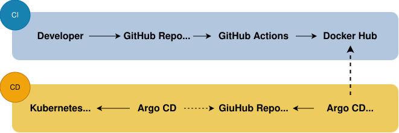
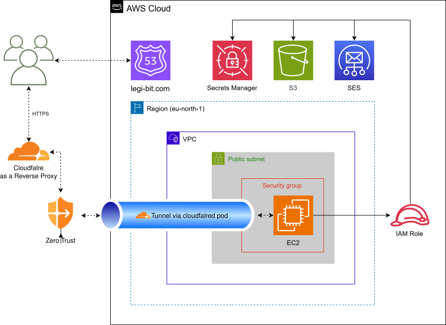

LegiBit – SaaS Cloud & DevOps Deployment
January 2025 – Present
Designed and deployed GitOps-Based SaaS cloud application:
- Deployed multiple applications in a k3s cluster on a single AWS EC2 instance.
- Integrated Amazon S3 for object storage and MongoDB for fast data access.
- Configured domain routing and DNS using Amazon Route 53.
- Used AWS ALB and target groups configuration for load balancing.
- Built CI pipeline with GitHub Actions to build and publish container images.
- Managed deployments with Argo CD following GitOps principles.
- Implemented monitoring and alerting using Prometheus and Grafana.
- Used Ansible for configuration management.
Repositories: Application Repository & Infrastructure Repository
TECHS
CI/CD FLOW

Kubernetes Architecture

AWS Infrastructure Layout
